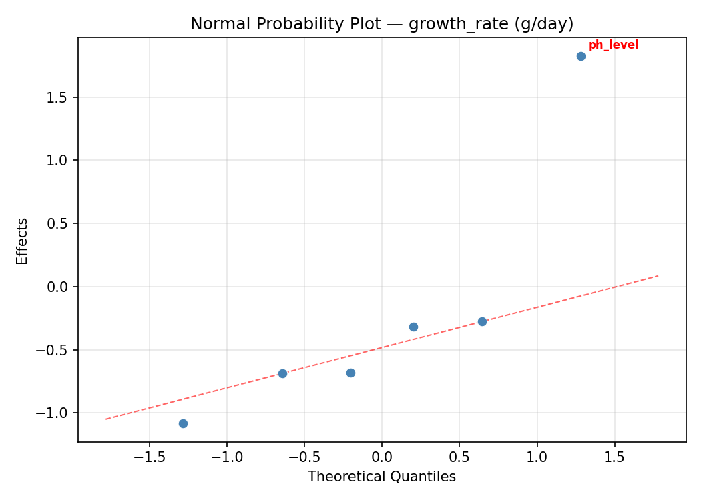
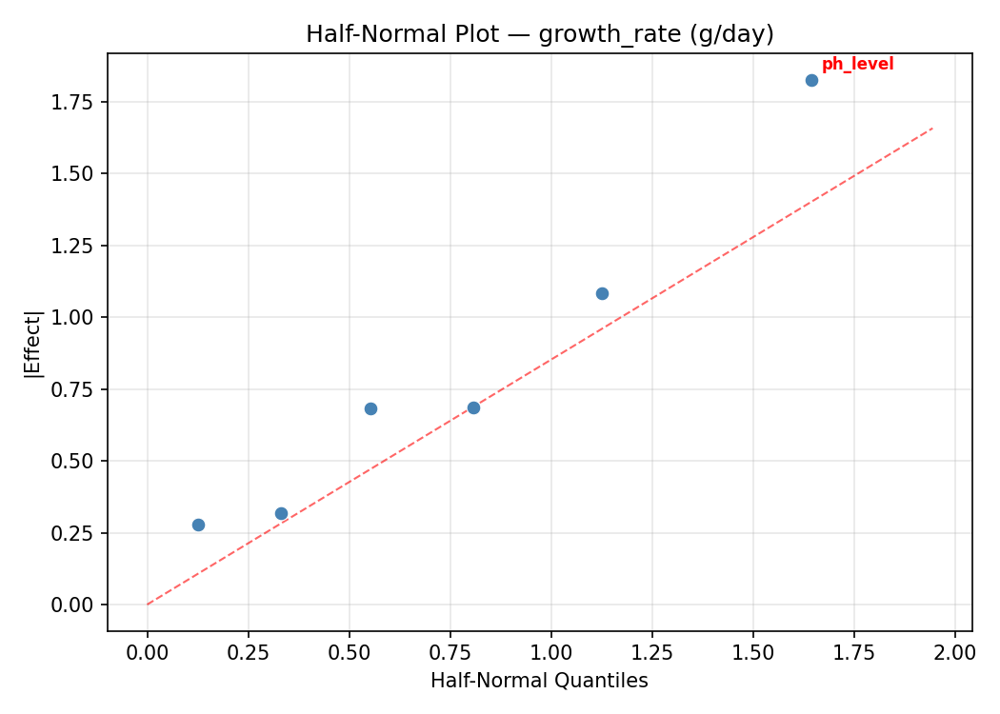
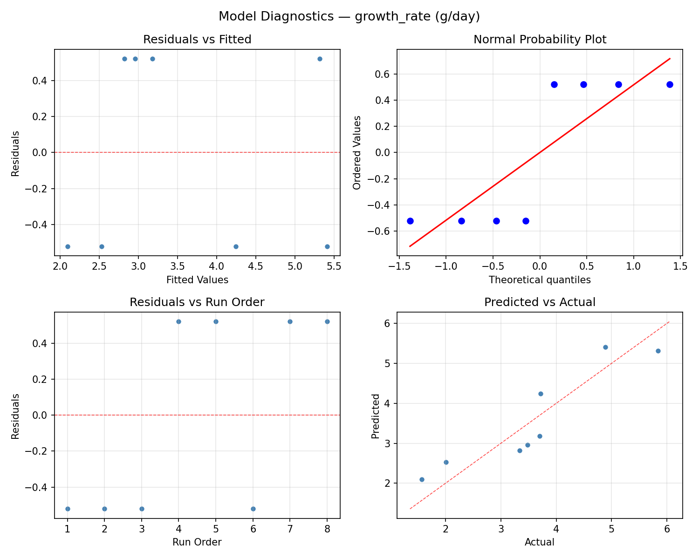
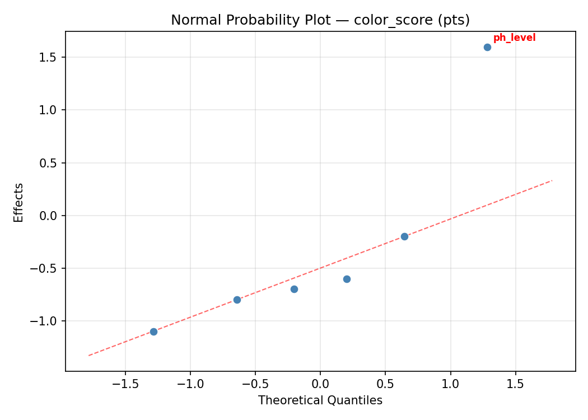
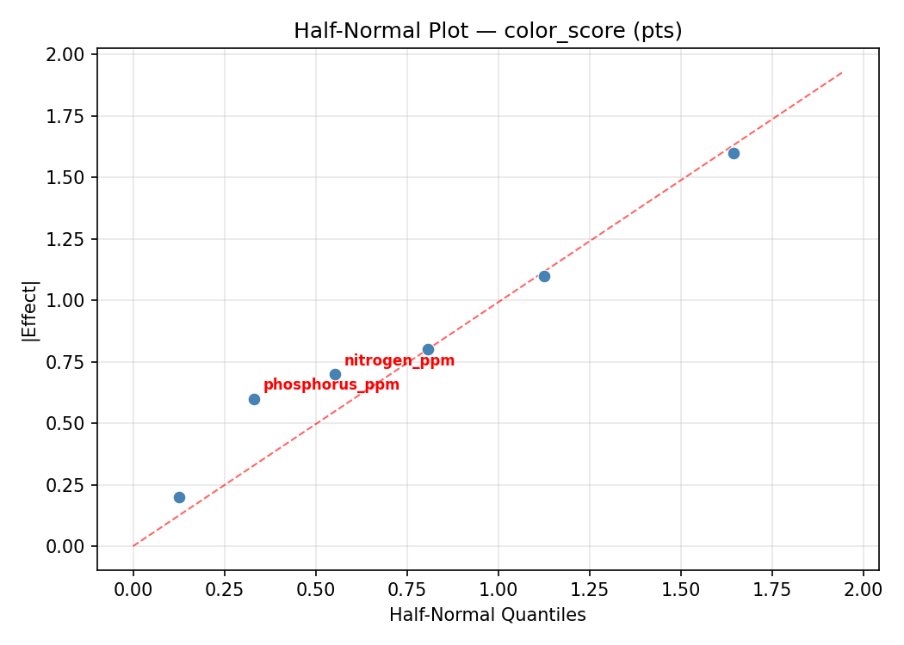
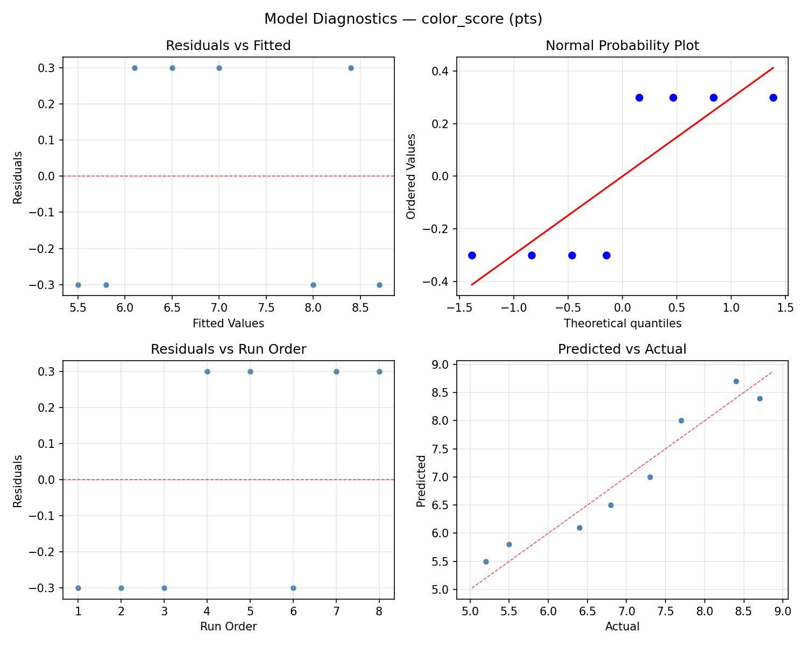

Summary
This experiment investigates hydroponic nutrient solution. Plackett-Burman screening of nitrogen, phosphorus, potassium, pH, EC, and calcium for lettuce growth rate and leaf color.
The design varies 6 factors: nitrogen ppm (ppm), ranging from 100 to 250, phosphorus ppm (ppm), ranging from 30 to 80, potassium ppm (ppm), ranging from 150 to 350, ph level (pH), ranging from 5.5 to 6.5, ec level (mS/cm), ranging from 1.0 to 2.5, and calcium ppm (ppm), ranging from 100 to 250. The goal is to optimize 2 responses: growth rate (g/day) (maximize) and color score (pts) (maximize). Fixed conditions held constant across all runs include crop = butterhead_lettuce, system = NFT.
A Plackett-Burman screening design was used to efficiently test 6 factors in only 8 runs. This design assumes interactions are negligible and focuses on identifying the most influential main effects.
Key Findings
For growth rate, the most influential factors were ph level (41.6%), calcium ppm (20.9%), phosphorus ppm (14.7%). The best observed value was 5.84 (at nitrogen ppm = 250, phosphorus ppm = 30, potassium ppm = 150).
For color score, the most influential factors were ph level (39.1%), potassium ppm (19.6%), phosphorus ppm (17.4%). The best observed value was 8.7 (at nitrogen ppm = 250, phosphorus ppm = 30, potassium ppm = 150).
Recommended Next Steps
- Follow up with a response surface design (CCD or Box-Behnken) on the top 3–4 factors to model curvature and find the true optimum.
- Consider whether any fixed factors should be varied in a future study.
- The screening results can guide factor reduction — drop factors contributing less than 5% and re-run with a smaller, more focused design.
Experimental Setup
Factors
| Factor | Low | High | Unit |
|---|
nitrogen_ppm | 100 | 250 | ppm |
phosphorus_ppm | 30 | 80 | ppm |
potassium_ppm | 150 | 350 | ppm |
ph_level | 5.5 | 6.5 | pH |
ec_level | 1.0 | 2.5 | mS/cm |
calcium_ppm | 100 | 250 | ppm |
Fixed: crop = butterhead_lettuce, system = NFT
Responses
| Response | Direction | Unit |
|---|
growth_rate | ↑ maximize | g/day |
color_score | ↑ maximize | pts |
Configuration
{
"metadata": {
"name": "Hydroponic Nutrient Solution",
"description": "Plackett-Burman screening of nitrogen, phosphorus, potassium, pH, EC, and calcium for lettuce growth rate and leaf color"
},
"factors": [
{
"name": "nitrogen_ppm",
"levels": [
"100",
"250"
],
"type": "continuous",
"unit": "ppm"
},
{
"name": "phosphorus_ppm",
"levels": [
"30",
"80"
],
"type": "continuous",
"unit": "ppm"
},
{
"name": "potassium_ppm",
"levels": [
"150",
"350"
],
"type": "continuous",
"unit": "ppm"
},
{
"name": "ph_level",
"levels": [
"5.5",
"6.5"
],
"type": "continuous",
"unit": "pH"
},
{
"name": "ec_level",
"levels": [
"1.0",
"2.5"
],
"type": "continuous",
"unit": "mS/cm"
},
{
"name": "calcium_ppm",
"levels": [
"100",
"250"
],
"type": "continuous",
"unit": "ppm"
}
],
"fixed_factors": {
"crop": "butterhead_lettuce",
"system": "NFT"
},
"responses": [
{
"name": "growth_rate",
"optimize": "maximize",
"unit": "g/day"
},
{
"name": "color_score",
"optimize": "maximize",
"unit": "pts"
}
],
"settings": {
"operation": "plackett_burman",
"test_script": "use_cases/100_hydroponic_nutrient/sim.sh"
}
}
Experimental Matrix
The Plackett-Burman Design produces 8 runs. Each row is one experiment with specific factor settings.
| Run | nitrogen_ppm | phosphorus_ppm | potassium_ppm | ph_level | ec_level | calcium_ppm |
|---|
| 1 | 250 | 80 | 350 | 5.5 | 1.0 | 100 |
| 2 | 100 | 30 | 350 | 6.5 | 1.0 | 100 |
| 3 | 100 | 80 | 150 | 6.5 | 1.0 | 250 |
| 4 | 250 | 80 | 350 | 6.5 | 2.5 | 250 |
| 5 | 100 | 80 | 150 | 5.5 | 2.5 | 100 |
| 6 | 250 | 30 | 150 | 6.5 | 2.5 | 100 |
| 7 | 100 | 30 | 350 | 5.5 | 2.5 | 250 |
| 8 | 250 | 30 | 150 | 5.5 | 1.0 | 250 |
Step-by-Step Workflow
1
Preview the design
$ python doe.py info --config use_cases/100_hydroponic_nutrient/config.json
2
Generate the runner script
$ python doe.py generate --config use_cases/100_hydroponic_nutrient/config.json \
--output use_cases/100_hydroponic_nutrient/results/run.sh --seed 42
3
Execute the experiments
$ bash use_cases/100_hydroponic_nutrient/results/run.sh
4
Analyze results
$ python doe.py analyze --config use_cases/100_hydroponic_nutrient/config.json
5
Get optimization recommendations
$ python doe.py optimize --config use_cases/100_hydroponic_nutrient/config.json
6
Multi-objective optimization
With 2 competing responses, use --multi to find the best compromise via Derringer–Suich desirability.
$ python doe.py optimize --config use_cases/100_hydroponic_nutrient/config.json --multi
7
Generate the HTML report
$ python doe.py report --config use_cases/100_hydroponic_nutrient/config.json \
--output use_cases/100_hydroponic_nutrient/results/report.html
Features Exercised
| Feature | Value |
|---|
| Design type | plackett_burman |
| Factor types | continuous (all 6) |
| Arg style | double-dash |
| Responses | 2 (growth_rate ↑, color_score ↑) |
| Total runs | 8 |
Analysis Results
Generated from actual experiment runs using the DOE Helper Tool.
Response: growth_rate
Top factors: ph_level (41.6%), calcium_ppm (20.9%), phosphorus_ppm (14.7%).
ANOVA
| Source | DF | SS | MS | F | p-value |
|---|
| Source | DF | SS | MS | F | p-value |
| nitrogen_ppm | 1 | 0.0561 | 0.0561 | 0.047 | 0.8349 |
| phosphorus_ppm | 1 | 0.9316 | 0.9316 | 0.777 | 0.4073 |
| potassium_ppm | 1 | 0.6670 | 0.6670 | 0.556 | 0.4800 |
| ph_level | 1 | 7.5078 | 7.5078 | 6.262 | 0.0408 |
| ec_level | 1 | 0.2016 | 0.2016 | 0.168 | 0.6940 |
| calcium_ppm | 1 | 1.8915 | 1.8915 | 1.578 | 0.2494 |
| nitrogen_ppm*phosphorus_ppm | 1 | 0.6670 | 0.6670 | 0.556 | 0.4800 |
| nitrogen_ppm*potassium_ppm | 1 | 0.9316 | 0.9316 | 0.777 | 0.4073 |
| nitrogen_ppm*ph_level | 1 | 0.2016 | 0.2016 | 0.168 | 0.6940 |
| nitrogen_ppm*ec_level | 1 | 7.5078 | 7.5078 | 6.262 | 0.0408 |
| nitrogen_ppm*calcium_ppm | 1 | 2.1736 | 2.1736 | 1.813 | 0.2201 |
| phosphorus_ppm*potassium_ppm | 1 | 0.0561 | 0.0561 | 0.047 | 0.8349 |
| phosphorus_ppm*ph_level | 1 | 1.8915 | 1.8915 | 1.578 | 0.2494 |
| phosphorus_ppm*ec_level | 1 | 2.1736 | 2.1736 | 1.813 | 0.2201 |
| phosphorus_ppm*calcium_ppm | 1 | 7.5078 | 7.5078 | 6.262 | 0.0408 |
| potassium_ppm*ph_level | 1 | 2.1736 | 2.1736 | 1.813 | 0.2201 |
| potassium_ppm*ec_level | 1 | 1.8915 | 1.8915 | 1.578 | 0.2494 |
| potassium_ppm*calcium_ppm | 1 | 0.2016 | 0.2016 | 0.168 | 0.6940 |
| ph_level*ec_level | 1 | 0.0561 | 0.0561 | 0.047 | 0.8349 |
| ph_level*calcium_ppm | 1 | 0.9316 | 0.9316 | 0.777 | 0.4073 |
| ec_level*calcium_ppm | 1 | 0.6670 | 0.6670 | 0.556 | 0.4800 |
| Error | (Lenth | PSE) | 7 | 8.3928 | 1.1990 |
| Total | 7 | 13.4293 | 1.9185 | | |
Pareto Chart

Main Effects Plot

Normal Probability Plot of Effects

Half-Normal Plot of Effects

Model Diagnostics

Response: color_score
Top factors: ph_level (39.1%), potassium_ppm (19.6%), phosphorus_ppm (17.4%).
ANOVA
| Source | DF | SS | MS | F | p-value |
|---|
| Source | DF | SS | MS | F | p-value |
| nitrogen_ppm | 1 | 0.0000 | 0.0000 | 0.000 | 1.0000 |
| phosphorus_ppm | 1 | 1.2800 | 1.2800 | 1.185 | 0.3124 |
| potassium_ppm | 1 | 1.6200 | 1.6200 | 1.500 | 0.2603 |
| ph_level | 1 | 6.4800 | 6.4800 | 6.000 | 0.0441 |
| ec_level | 1 | 0.7200 | 0.7200 | 0.667 | 0.4411 |
| calcium_ppm | 1 | 0.5000 | 0.5000 | 0.463 | 0.5181 |
| nitrogen_ppm*phosphorus_ppm | 1 | 1.6200 | 1.6200 | 1.500 | 0.2603 |
| nitrogen_ppm*potassium_ppm | 1 | 1.2800 | 1.2800 | 1.185 | 0.3124 |
| nitrogen_ppm*ph_level | 1 | 0.7200 | 0.7200 | 0.667 | 0.4411 |
| nitrogen_ppm*ec_level | 1 | 6.4800 | 6.4800 | 6.000 | 0.0441 |
| nitrogen_ppm*calcium_ppm | 1 | 0.7200 | 0.7200 | 0.667 | 0.4411 |
| phosphorus_ppm*potassium_ppm | 1 | 0.0000 | 0.0000 | 0.000 | 1.0000 |
| phosphorus_ppm*ph_level | 1 | 0.5000 | 0.5000 | 0.463 | 0.5181 |
| phosphorus_ppm*ec_level | 1 | 0.7200 | 0.7200 | 0.667 | 0.4411 |
| phosphorus_ppm*calcium_ppm | 1 | 6.4800 | 6.4800 | 6.000 | 0.0441 |
| potassium_ppm*ph_level | 1 | 0.7200 | 0.7200 | 0.667 | 0.4411 |
| potassium_ppm*ec_level | 1 | 0.5000 | 0.5000 | 0.463 | 0.5181 |
| potassium_ppm*calcium_ppm | 1 | 0.7200 | 0.7200 | 0.667 | 0.4411 |
| ph_level*ec_level | 1 | 0.0000 | 0.0000 | 0.000 | 1.0000 |
| ph_level*calcium_ppm | 1 | 1.2800 | 1.2800 | 1.185 | 0.3124 |
| ec_level*calcium_ppm | 1 | 1.6200 | 1.6200 | 1.500 | 0.2603 |
| Error | (Lenth | PSE) | 7 | 7.5600 | 1.0800 |
| Total | 7 | 11.3200 | 1.6171 | | |
Pareto Chart

Main Effects Plot

Normal Probability Plot of Effects

Half-Normal Plot of Effects

Model Diagnostics

Response Surface Plots
3D surfaces fitted with quadratic RSM. Red dots are observed data points.
color score ec level vs calcium ppm

color score nitrogen ppm vs calcium ppm

color score nitrogen ppm vs ec level

color score nitrogen ppm vs ph level

color score nitrogen ppm vs phosphorus ppm

color score nitrogen ppm vs potassium ppm

color score ph level vs calcium ppm

color score ph level vs ec level

color score phosphorus ppm vs calcium ppm

color score phosphorus ppm vs ec level

color score phosphorus ppm vs ph level

color score phosphorus ppm vs potassium ppm

color score potassium ppm vs calcium ppm

color score potassium ppm vs ec level

color score potassium ppm vs ph level

growth rate ec level vs calcium ppm

growth rate nitrogen ppm vs calcium ppm

growth rate nitrogen ppm vs ec level

growth rate nitrogen ppm vs ph level

growth rate nitrogen ppm vs phosphorus ppm

growth rate nitrogen ppm vs potassium ppm

growth rate ph level vs calcium ppm

growth rate ph level vs ec level

growth rate phosphorus ppm vs calcium ppm

growth rate phosphorus ppm vs ec level

growth rate phosphorus ppm vs ph level

growth rate phosphorus ppm vs potassium ppm

growth rate potassium ppm vs calcium ppm

growth rate potassium ppm vs ec level

growth rate potassium ppm vs ph level

Multi-Objective Optimization
When responses compete, Derringer–Suich desirability finds the best compromise.
Each response is scaled to a 0–1 desirability, then combined via a weighted geometric mean.
Overall Desirability
D = 0.9545
Per-Response Desirability
| Response | Weight | Desirability | Predicted | Dir |
|---|
growth_rate |
1.5 |
|
5.84 0.9545 5.84 g/day |
↑ |
color_score |
1.5 |
|
8.70 0.9545 8.70 pts |
↑ |
Recommended Settings
| Factor | Value |
|---|
nitrogen_ppm | 250 ppm |
phosphorus_ppm | 80 ppm |
potassium_ppm | 350 ppm |
ph_level | 5.5 pH |
ec_level | 1.0 mS/cm |
calcium_ppm | 100 ppm |
Source: from observed run #4
Trade-off Summary
Sacrifice = how much worse than single-objective best.
| Response | Predicted | Best Observed | Sacrifice |
|---|
color_score | 8.70 | 8.70 | +0.00 |
Top 3 Runs by Desirability
| Run | D | Factor Settings |
|---|
| #1 | 0.8121 | nitrogen_ppm=100, phosphorus_ppm=80, potassium_ppm=150, ph_level=5.5, ec_level=2.5, calcium_ppm=100 |
| #6 | 0.5913 | nitrogen_ppm=250, phosphorus_ppm=80, potassium_ppm=350, ph_level=6.5, ec_level=2.5, calcium_ppm=250 |
Model Quality
| Response | R² | Type |
|---|
color_score | 0.9364 | linear |
Full Multi-Objective Output
============================================================
MULTI-OBJECTIVE OPTIMIZATION
Method: Derringer-Suich Desirability Function
============================================================
Overall desirability: D = 0.9545
Response Weight Desirability Predicted Direction
---------------------------------------------------------------------
growth_rate 1.5 0.9545 5.84 g/day ↑
color_score 1.5 0.9545 8.70 pts ↑
Recommended settings:
nitrogen_ppm = 250 ppm
phosphorus_ppm = 80 ppm
potassium_ppm = 350 ppm
ph_level = 5.5 pH
ec_level = 1.0 mS/cm
calcium_ppm = 100 ppm
(from observed run #4)
Trade-off summary:
growth_rate: 5.84 (best observed: 5.84, sacrifice: +0.00)
color_score: 8.70 (best observed: 8.70, sacrifice: +0.00)
Model quality:
growth_rate: R² = 0.8381 (linear)
color_score: R² = 0.9364 (linear)
Top 3 observed runs by overall desirability:
1. Run #4 (D=0.9545): nitrogen_ppm=250, phosphorus_ppm=80, potassium_ppm=350, ph_level=5.5, ec_level=1.0, calcium_ppm=100
2. Run #1 (D=0.8121): nitrogen_ppm=100, phosphorus_ppm=80, potassium_ppm=150, ph_level=5.5, ec_level=2.5, calcium_ppm=100
3. Run #6 (D=0.5913): nitrogen_ppm=250, phosphorus_ppm=80, potassium_ppm=350, ph_level=6.5, ec_level=2.5, calcium_ppm=250
Full Analysis Output
=== Main Effects: growth_rate ===
Factor Effect Std Error % Contribution
--------------------------------------------------------------
ph_level 1.9375 0.4897 41.6%
calcium_ppm 0.9725 0.4897 20.9%
phosphorus_ppm 0.6825 0.4897 14.7%
potassium_ppm 0.5775 0.4897 12.4%
ec_level -0.3175 0.4897 6.8%
nitrogen_ppm -0.1675 0.4897 3.6%
=== ANOVA Table: growth_rate ===
Source DF SS MS F p-value
-----------------------------------------------------------------------------
nitrogen_ppm 1 0.0561 0.0561 0.047 0.8349
phosphorus_ppm 1 0.9316 0.9316 0.777 0.4073
potassium_ppm 1 0.6670 0.6670 0.556 0.4800
ph_level 1 7.5078 7.5078 6.262 0.0408
ec_level 1 0.2016 0.2016 0.168 0.6940
calcium_ppm 1 1.8915 1.8915 1.578 0.2494
nitrogen_ppm*phosphorus_ppm 1 0.6670 0.6670 0.556 0.4800
nitrogen_ppm*potassium_ppm 1 0.9316 0.9316 0.777 0.4073
nitrogen_ppm*ph_level 1 0.2016 0.2016 0.168 0.6940
nitrogen_ppm*ec_level 1 7.5078 7.5078 6.262 0.0408
nitrogen_ppm*calcium_ppm 1 2.1736 2.1736 1.813 0.2201
phosphorus_ppm*potassium_ppm 1 0.0561 0.0561 0.047 0.8349
phosphorus_ppm*ph_level 1 1.8915 1.8915 1.578 0.2494
phosphorus_ppm*ec_level 1 2.1736 2.1736 1.813 0.2201
phosphorus_ppm*calcium_ppm 1 7.5078 7.5078 6.262 0.0408
potassium_ppm*ph_level 1 2.1736 2.1736 1.813 0.2201
potassium_ppm*ec_level 1 1.8915 1.8915 1.578 0.2494
potassium_ppm*calcium_ppm 1 0.2016 0.2016 0.168 0.6940
ph_level*ec_level 1 0.0561 0.0561 0.047 0.8349
ph_level*calcium_ppm 1 0.9316 0.9316 0.777 0.4073
ec_level*calcium_ppm 1 0.6670 0.6670 0.556 0.4800
Error (Lenth PSE) 7 8.3928 1.1990
Total 7 13.4293 1.9185
Note: Error estimated using Lenth's pseudo-standard-error (unreplicated design)
=== Interaction Effects: growth_rate ===
Factor A Factor B Interaction % Contribution
------------------------------------------------------------------------
nitrogen_ppm ec_level 1.9375 15.6%
phosphorus_ppm calcium_ppm 1.9375 15.6%
nitrogen_ppm calcium_ppm -1.0425 8.4%
phosphorus_ppm ec_level -1.0425 8.4%
potassium_ppm ph_level -1.0425 8.4%
phosphorus_ppm ph_level 0.9725 7.8%
potassium_ppm ec_level 0.9725 7.8%
nitrogen_ppm potassium_ppm 0.6825 5.5%
ph_level calcium_ppm 0.6825 5.5%
nitrogen_ppm phosphorus_ppm 0.5775 4.6%
ec_level calcium_ppm 0.5775 4.6%
nitrogen_ppm ph_level -0.3175 2.6%
potassium_ppm calcium_ppm -0.3175 2.6%
phosphorus_ppm potassium_ppm -0.1675 1.3%
ph_level ec_level -0.1675 1.3%
=== Summary Statistics: growth_rate ===
nitrogen_ppm:
Level N Mean Std Min Max
------------------------------------------------------------
100 4 3.6525 1.7470 1.5700 5.8400
250 4 3.4850 1.1856 2.0100 4.8900
phosphorus_ppm:
Level N Mean Std Min Max
------------------------------------------------------------
30 4 3.2275 0.8189 2.0100 3.7200
80 4 3.9100 1.8696 1.5700 5.8400
potassium_ppm:
Level N Mean Std Min Max
------------------------------------------------------------
150 4 3.2800 1.9380 1.5700 5.8400
350 4 3.8575 0.7060 3.3400 4.8900
ph_level:
Level N Mean Std Min Max
------------------------------------------------------------
5.5 4 2.6000 0.9541 1.5700 3.4800
6.5 4 4.5375 1.0313 3.7000 5.8400
ec_level:
Level N Mean Std Min Max
------------------------------------------------------------
1.0 4 3.7275 1.5877 2.0100 5.8400
2.5 4 3.4100 1.3742 1.5700 4.8900
calcium_ppm:
Level N Mean Std Min Max
------------------------------------------------------------
100 4 3.0825 1.0233 1.5700 3.7200
250 4 4.0550 1.6729 2.0100 5.8400
=== Main Effects: color_score ===
Factor Effect Std Error % Contribution
--------------------------------------------------------------
ph_level 1.8000 0.4496 39.1%
potassium_ppm 0.9000 0.4496 19.6%
phosphorus_ppm 0.8000 0.4496 17.4%
ec_level -0.6000 0.4496 13.0%
calcium_ppm 0.5000 0.4496 10.9%
nitrogen_ppm 0.0000 0.4496 0.0%
=== ANOVA Table: color_score ===
Source DF SS MS F p-value
-----------------------------------------------------------------------------
nitrogen_ppm 1 0.0000 0.0000 0.000 1.0000
phosphorus_ppm 1 1.2800 1.2800 1.185 0.3124
potassium_ppm 1 1.6200 1.6200 1.500 0.2603
ph_level 1 6.4800 6.4800 6.000 0.0441
ec_level 1 0.7200 0.7200 0.667 0.4411
calcium_ppm 1 0.5000 0.5000 0.463 0.5181
nitrogen_ppm*phosphorus_ppm 1 1.6200 1.6200 1.500 0.2603
nitrogen_ppm*potassium_ppm 1 1.2800 1.2800 1.185 0.3124
nitrogen_ppm*ph_level 1 0.7200 0.7200 0.667 0.4411
nitrogen_ppm*ec_level 1 6.4800 6.4800 6.000 0.0441
nitrogen_ppm*calcium_ppm 1 0.7200 0.7200 0.667 0.4411
phosphorus_ppm*potassium_ppm 1 0.0000 0.0000 0.000 1.0000
phosphorus_ppm*ph_level 1 0.5000 0.5000 0.463 0.5181
phosphorus_ppm*ec_level 1 0.7200 0.7200 0.667 0.4411
phosphorus_ppm*calcium_ppm 1 6.4800 6.4800 6.000 0.0441
potassium_ppm*ph_level 1 0.7200 0.7200 0.667 0.4411
potassium_ppm*ec_level 1 0.5000 0.5000 0.463 0.5181
potassium_ppm*calcium_ppm 1 0.7200 0.7200 0.667 0.4411
ph_level*ec_level 1 0.0000 0.0000 0.000 1.0000
ph_level*calcium_ppm 1 1.2800 1.2800 1.185 0.3124
ec_level*calcium_ppm 1 1.6200 1.6200 1.500 0.2603
Error (Lenth PSE) 7 7.5600 1.0800
Total 7 11.3200 1.6171
Note: Error estimated using Lenth's pseudo-standard-error (unreplicated design)
=== Interaction Effects: color_score ===
Factor A Factor B Interaction % Contribution
------------------------------------------------------------------------
nitrogen_ppm ec_level 1.8000 16.4%
phosphorus_ppm calcium_ppm 1.8000 16.4%
nitrogen_ppm phosphorus_ppm 0.9000 8.2%
ec_level calcium_ppm 0.9000 8.2%
nitrogen_ppm potassium_ppm 0.8000 7.3%
ph_level calcium_ppm 0.8000 7.3%
nitrogen_ppm ph_level -0.6000 5.5%
nitrogen_ppm calcium_ppm -0.6000 5.5%
phosphorus_ppm ec_level -0.6000 5.5%
potassium_ppm ph_level -0.6000 5.5%
potassium_ppm calcium_ppm -0.6000 5.5%
phosphorus_ppm ph_level 0.5000 4.5%
potassium_ppm ec_level 0.5000 4.5%
phosphorus_ppm potassium_ppm 0.0000 0.0%
ph_level ec_level 0.0000 0.0%
=== Summary Statistics: color_score ===
nitrogen_ppm:
Level N Mean Std Min Max
------------------------------------------------------------
100 4 7.0000 1.5253 5.2000 8.7000
250 4 7.0000 1.2028 5.5000 8.4000
phosphorus_ppm:
Level N Mean Std Min Max
------------------------------------------------------------
30 4 6.6000 0.9129 5.5000 7.7000
80 4 7.4000 1.5853 5.2000 8.7000
potassium_ppm:
Level N Mean Std Min Max
------------------------------------------------------------
150 4 6.5500 1.5927 5.2000 8.7000
350 4 7.4500 0.8347 6.4000 8.4000
ph_level:
Level N Mean Std Min Max
------------------------------------------------------------
5.5 4 6.1000 0.9487 5.2000 7.3000
6.5 4 7.9000 0.8446 6.8000 8.7000
ec_level:
Level N Mean Std Min Max
------------------------------------------------------------
1.0 4 7.3000 1.3367 5.5000 8.7000
2.5 4 6.7000 1.3216 5.2000 8.4000
calcium_ppm:
Level N Mean Std Min Max
------------------------------------------------------------
100 4 6.7500 1.0970 5.2000 7.7000
250 4 7.2500 1.5503 5.5000 8.7000
Optimization Recommendations
=== Optimization: growth_rate ===
Direction: maximize
Best observed run: #4
nitrogen_ppm = 250
phosphorus_ppm = 30
potassium_ppm = 150
ph_level = 5.5
ec_level = 1.0
calcium_ppm = 250
Value: 5.84
RSM Model (linear, R² = 0.8787, Adj R² = 0.1509):
Coefficients:
intercept +3.5687
nitrogen_ppm +0.1938
phosphorus_ppm -0.5213
potassium_ppm -0.3762
ph_level -0.9687
ec_level -0.0488
calcium_ppm -0.2887
Predicted optimum (from linear model, at observed points):
nitrogen_ppm = 250
phosphorus_ppm = 30
potassium_ppm = 150
ph_level = 5.5
ec_level = 1.0
calcium_ppm = 250
Predicted value: 5.3887
Surface optimum (via L-BFGS-B, linear model):
nitrogen_ppm = 250
phosphorus_ppm = 30
potassium_ppm = 150
ph_level = 5.5
ec_level = 1
calcium_ppm = 100
Predicted value: 5.9662
Model quality: Good fit — general trends are captured, some noise remains.
Factor importance:
1. ph_level (effect: -1.9, contribution: 40.4%)
2. phosphorus_ppm (effect: -1.0, contribution: 21.7%)
3. potassium_ppm (effect: -0.8, contribution: 15.7%)
4. calcium_ppm (effect: -0.6, contribution: 12.0%)
5. nitrogen_ppm (effect: 0.4, contribution: 8.1%)
6. ec_level (effect: -0.1, contribution: 2.0%)
=== Optimization: color_score ===
Direction: maximize
Best observed run: #4
nitrogen_ppm = 250
phosphorus_ppm = 30
potassium_ppm = 150
ph_level = 5.5
ec_level = 1.0
calcium_ppm = 250
Value: 8.7
RSM Model (linear, R² = 0.8405, Adj R² = -0.1162):
Coefficients:
intercept +7.0000
nitrogen_ppm +0.0750
phosphorus_ppm -0.3000
potassium_ppm -0.1750
ph_level -0.9000
ec_level -0.2250
calcium_ppm -0.4500
Predicted optimum (from linear model, at observed points):
nitrogen_ppm = 250
phosphorus_ppm = 30
potassium_ppm = 150
ph_level = 5.5
ec_level = 1.0
calcium_ppm = 250
Predicted value: 8.2250
Surface optimum (via L-BFGS-B, linear model):
nitrogen_ppm = 250
phosphorus_ppm = 30
potassium_ppm = 150
ph_level = 5.5
ec_level = 1
calcium_ppm = 100
Predicted value: 9.1250
Model quality: Good fit — general trends are captured, some noise remains.
Factor importance:
1. ph_level (effect: -1.8, contribution: 42.4%)
2. calcium_ppm (effect: -0.9, contribution: 21.2%)
3. phosphorus_ppm (effect: -0.6, contribution: 14.1%)
4. ec_level (effect: -0.4, contribution: 10.6%)
5. potassium_ppm (effect: -0.3, contribution: 8.2%)
6. nitrogen_ppm (effect: 0.2, contribution: 3.5%)